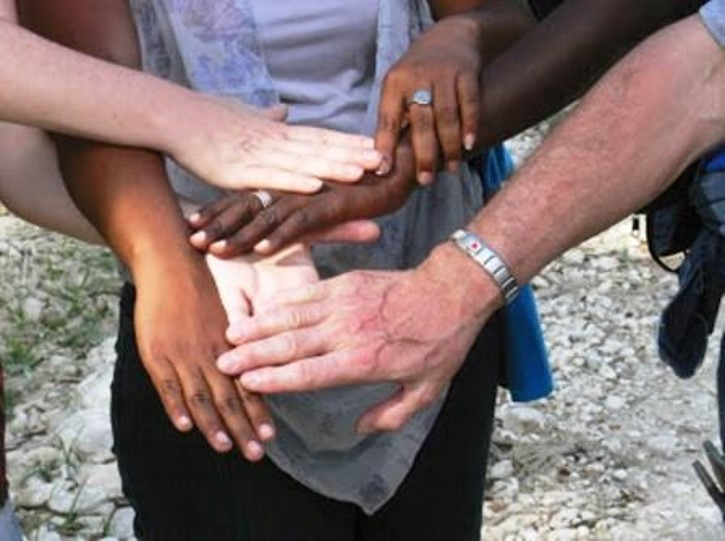

La mission de Solidarité-Haïti est de sensibiliser les gens d'ici à la solidarité internationale pour soutenir des projets de développement durable en Haïti ayant comme visée l'atteinte d'une autonomie.
Les valeurs de l'organisme sont aussi interreliées :
La solidarité et le partage — Les donateurs et bénévoles de Solidarité-Haïti partagent leur énergie, leurs talents et leurs ressources pour exprimer leur solidarité avec les communautés partenaires que nous soutenous en Haïti.
Le respect de la dignité humaine et l'épanouissement des paysans et paysannes en Haïti — « Il faut construire avec les paysans, être avec eux, ni devant ni derrière, mais à côté d'eux. Les écouter, leur apporter ce qu'on leur a toujours dénié, l'étude, la recherche, la rigueur de la technicité moderne. »
- Frère Francklin Armand
Le partenariat pour favoriser l'autonomie — Il est primordial, avant d'intervenir en Haïti, de pouvoir rencontrer et écouter ses habitants. La politique de Solidarité-Haïti est donc de faire appel à des gens du milieu, ciblés pour leurs compétences et leur dévouement au service de leur communauté, et de les accompagner pendant l'évolution des projets que nous subventionnons.
Entretenir l'espoir — Les dons envoyés à nos partenaires haïtiens sont une source d'espoir pour eux. L'aide que nous leur apportons, si petite soit-elle, leur permet de toujours espérer une vie meilleure. Nous croyons avec eux qu'un nouvel Haïti est vraiment possible!
Solidarité-Haïti a connu ses débuts en 1997 et existe depuis 2007 de façon autonome sous le nom officiel de Centre d'action pour le développement et la solidarité en Haïti (CADSH).
Il y a plus de 20 ans que Solidarité-Haïti a fait ses premiers pas. Une idée qui a germée dans la tête de ses deux fondateurs, Benoit Bégin et Héléna Kelly, qui ont su rassembler au Québec des artisans de l'aide humanitaire afin de cristalliser une mission exceptionnelle.
Au fil des ans, Solidarité-Haïti a établi des liens avec les communautés paysannes de plusieurs régions d'Haïti, plus particulièrement dans les régions rurales éloignées des grandes villes, soit :
dans le plateau central ;
dans le secteur rural de l'Artibonite ;
dans le Sud-Est et le Nord-Ouest d'Haïti ;
de même que dans différentes régions (voir la carte ci-contre).
Solidarité-Haïti collabore avec des paysans engagés et impliqués dans leur milieu afin de bien cerner et déterminer les projets prioritaires qui seront mis en œuvre pour et par les paysans.
Notre conseil d'administration fonctionne selon les principes des organismes sans but lucratif. les membres pour sont les suivants :

Steve Harris, président ;
Wes Darou, vice-présidente ;
Sylvie Roy, secrétaire ;
Loyola Leroux, trésorier ;
Benoit Bégin, conseiller ;
Héléna Kelly, conseiller ;
Marc Prince, conseiller ;
Frédéric Chouinard, conseiller.
Notre organisme a son propre numéro d'enregistrement d'œuvre de charité, 85470 8963 RR0001, et peut donc émettre des reçus aux fins d'impôts. De plus, tout le travail pour gérer l'organisme est fait par des bénévoles; nous ne payons pas de salaires. Cela nous permet d'assurer que 100% des dons reçus soient dirigés directement à la subvention des projets.